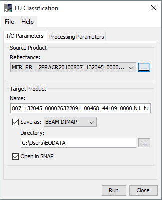
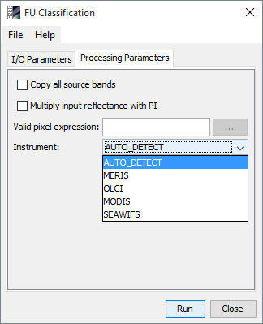

| Forel-Ule Algorithm For True Color Classification | |
True Colour Classification of Natural Waters with Medium-Spectral Resolution Satellites: SeaWiFS, MODIS, MERIS and OLCI


| MERIS | l2_flags.WATER", not l1p_flags.CC_LAND and not l1p_flags.CC_CLOUD, NOT l1_flags.LAND_OCEAN |
| OLCI | WQSF_lsb.WATER and not WQSF_lsb.CLOUD, LQSF_WATER |
| MODIS | not l2_flags.LAND and not l2_flags.CLDICE |
| SEAWIFS | not l2_flags.LAND and not l2_flags.CLDICE |